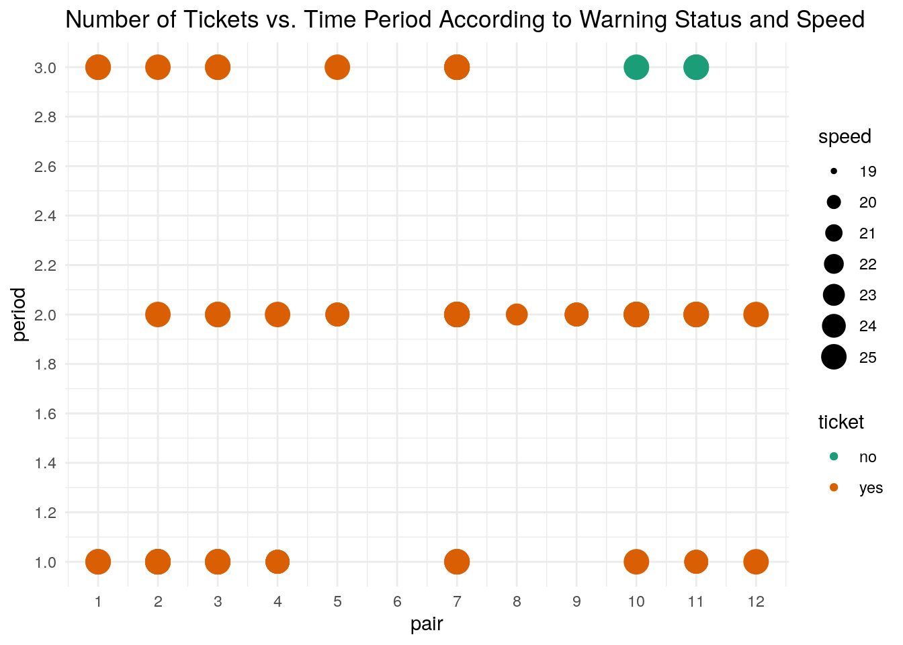
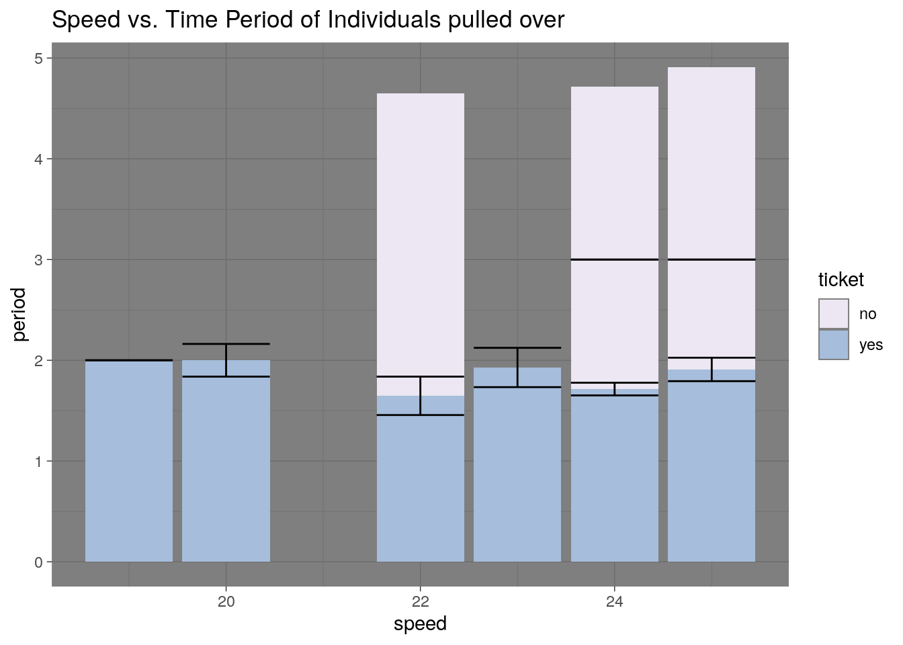
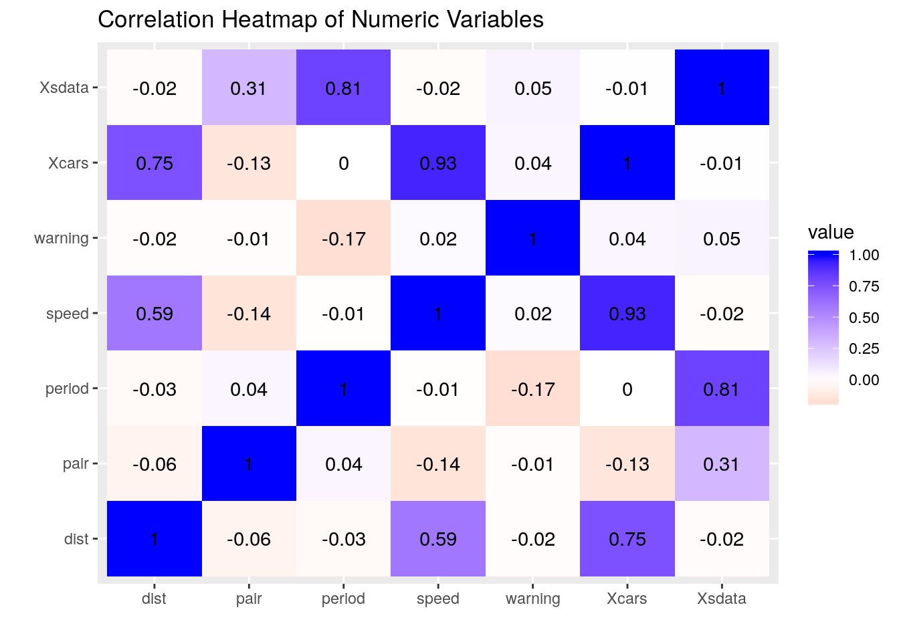
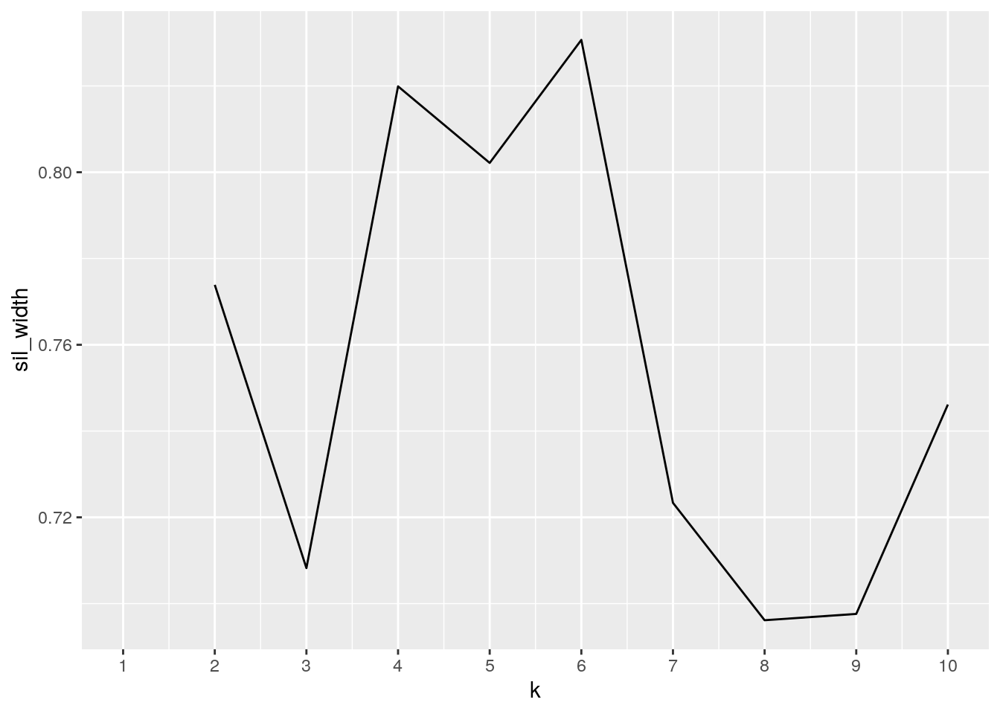
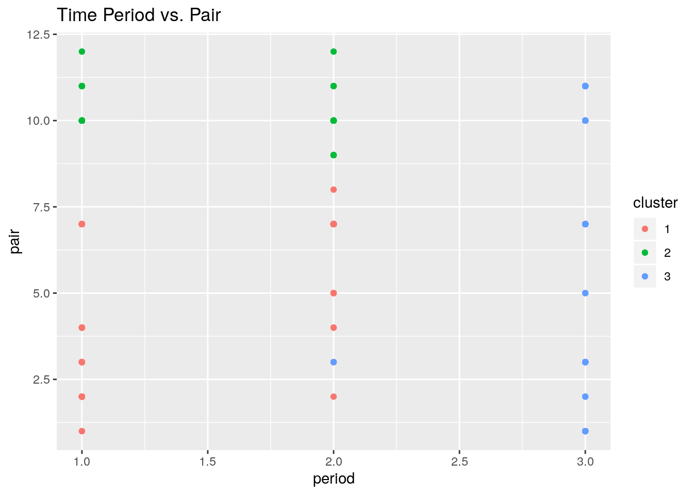
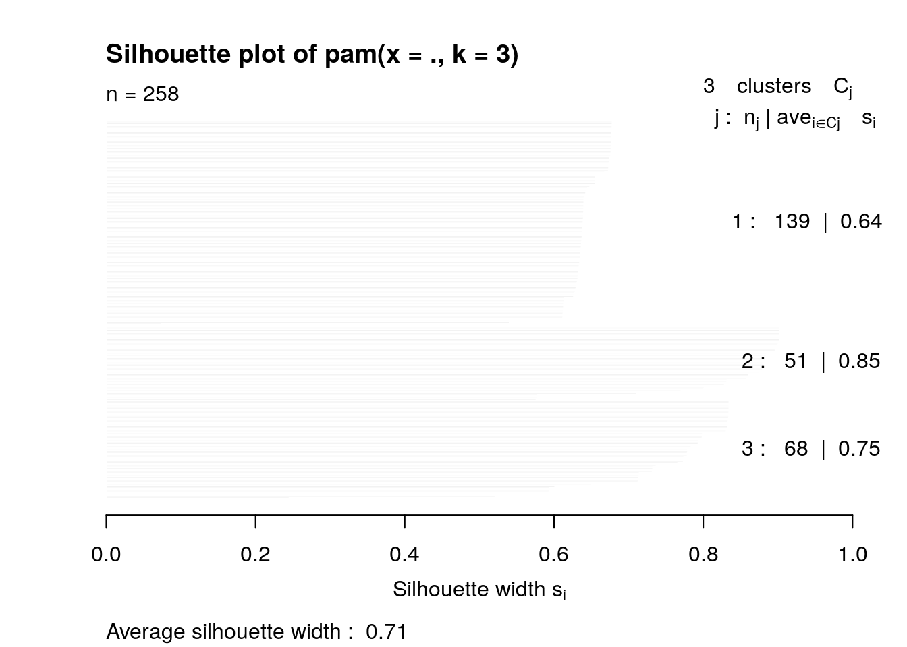
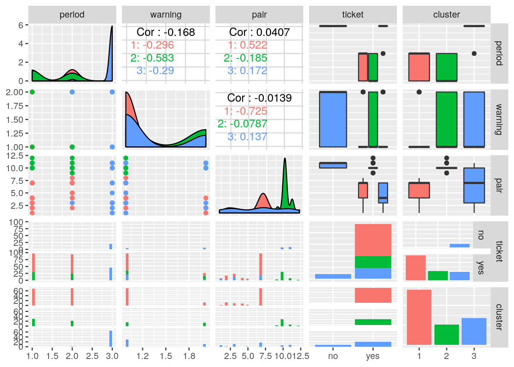

#Data sets
library(tidyverse)## ── Attaching packages ─────────────────────────────────────────────────────────────────────────────────────── tidyverse 1.3.0 ──## ✔ ggplot2 3.2.1 ✔ purrr 0.3.3
## ✔ tibble 2.1.3 ✔ dplyr 0.8.3
## ✔ tidyr 1.0.0.9000 ✔ stringr 1.4.0
## ✔ readr 1.3.1 ✔ forcats 0.4.0## ── Conflicts ────────────────────────────────────────────────────────────────────────────────────────── tidyverse_conflicts() ──
## ✖ dplyr::filter() masks stats::filter()
## ✖ dplyr::lag() masks stats::lag()library("readxl")
cars <- read.csv("~/cars.csv")
sdata <- read.csv("~/sdatareal.csv")
library(ggplot2)
head(cars)## X speed dist
## 1 1 4 2
## 2 2 4 10
## 3 3 7 4
## 4 4 7 22
## 5 5 8 16
## 6 6 9 10glimpse(cars)## Observations: 50
## Variables: 3
## $ X <int> 1, 2, 3, 4, 5, 6, 7, 8, 9, 10, 11, 12, 13, 14, 15, 16, 17, 18, …
## $ speed <int> 4, 4, 7, 7, 8, 9, 10, 10, 10, 11, 11, 12, 12, 12, 12, 13, 13, 1…
## $ dist <int> 2, 10, 4, 22, 16, 10, 18, 26, 34, 17, 28, 14, 20, 24, 28, 26, 3…cars <- as.data.frame(cars)
head(sdata)## X speed period warning pair ticket
## 1 1 26 1 1 1 yes
## 2 2 26 1 1 1 yes
## 3 3 26 1 1 1 yes
## 4 4 26 1 1 1 yes
## 5 5 27 1 1 1 yes
## 6 6 28 1 1 1 yessdata <- as.data.frame(sdata)
glimpse(sdata)## Observations: 8,437
## Variables: 6
## $ X <int> 1, 2, 3, 4, 5, 6, 7, 8, 9, 10, 11, 12, 13, 14, 15, 16, 17, 18…
## $ speed <int> 26, 26, 26, 26, 27, 28, 28, 28, 28, 29, 29, 29, 29, 29, 29, 2…
## $ period <int> 1, 1, 1, 1, 1, 1, 1, 1, 1, 1, 1, 1, 1, 1, 1, 1, 1, 1, 1, 1, 1…
## $ warning <int> 1, 1, 1, 1, 1, 1, 1, 1, 1, 1, 1, 1, 1, 1, 1, 1, 1, 1, 1, 1, 1…
## $ pair <int> 1, 1, 1, 1, 1, 1, 1, 1, 1, 1, 1, 1, 1, 1, 1, 1, 1, 1, 1, 1, 1…
## $ ticket <fct> yes, yes, yes, yes, yes, yes, yes, yes, yes, yes, yes, yes, y…Introduction: The two data sets I chose were chosen from https://vincentarelbundock.github.io/Rdatasets/datasets.html and are having to due with cars that had been pulled over and whether or not they received a ticket. While this data may seem mundane, I chose it because I believe I may find a strong correlation between an unthought of variable and whether or not a car receieves a ticket. The data I am analyzing contains the variables speed(how fast the vehicle was going when pulled over), distance(how far the car travel before stopping), period(the time of day the car was pulled over, distinguished by 3, 8 hour periods), warning(whether or not the vechicle received a warning, pair(how many people were in the given vehicle), and ticket (whether or not the vehicle recieved a ticket). Initially, the strongest association I may expect to see is between time period and people in the car, as certain times of day may increase the amount of people traveling together. For example more people may travel together at night due to dinner plans or an evening event. Intutively, the other variables would not seem to have a strong assocation, however I am interested to see if there is an unexpected assocation.
midprojectpart1 <- sdata
midprojectpart1 <- sdata %>%
pivot_wider(names_from = "warning", values_from = "period") %>%
glimpse()## Observations: 8,437
## Variables: 6
## $ X <int> 1, 2, 3, 4, 5, 6, 7, 8, 9, 10, 11, 12, 13, 14, 15, 16, 17, 18,…
## $ speed <int> 26, 26, 26, 26, 27, 28, 28, 28, 28, 29, 29, 29, 29, 29, 29, 29…
## $ pair <int> 1, 1, 1, 1, 1, 1, 1, 1, 1, 1, 1, 1, 1, 1, 1, 1, 1, 1, 1, 1, 1,…
## $ ticket <fct> yes, yes, yes, yes, yes, yes, yes, yes, yes, yes, yes, yes, ye…
## $ `1` <int> 1, 1, 1, 1, 1, 1, 1, 1, 1, 1, 1, 1, 1, 1, 1, 1, 1, 1, 1, 1, 1,…
## $ `2` <int> NA, NA, NA, NA, NA, NA, NA, NA, NA, NA, NA, NA, NA, NA, NA, NA…midprojectpart1 <- midprojectpart1 %>%
pivot_longer(c("1","2"),names_to = "warning",values_to = "period", values_drop_na=T ) %>%
glimpse()## Observations: 8,437
## Variables: 6
## $ X <int> 1, 2, 3, 4, 5, 6, 7, 8, 9, 10, 11, 12, 13, 14, 15, 16, 17, 18…
## $ speed <int> 26, 26, 26, 26, 27, 28, 28, 28, 28, 29, 29, 29, 29, 29, 29, 2…
## $ pair <int> 1, 1, 1, 1, 1, 1, 1, 1, 1, 1, 1, 1, 1, 1, 1, 1, 1, 1, 1, 1, 1…
## $ ticket <fct> yes, yes, yes, yes, yes, yes, yes, yes, yes, yes, yes, yes, y…
## $ warning <chr> "1", "1", "1", "1", "1", "1", "1", "1", "1", "1", "1", "1", "…
## $ period <int> 1, 1, 1, 1, 1, 1, 1, 1, 1, 1, 1, 1, 1, 1, 1, 1, 1, 1, 1, 1, 1…Because my data was already tidy, I pivoted wider by making a yes and no columns with the warning status of each car pulled over and then proceeded to pivot longer to condense the yes and no columns into one column called “warning”. This made the data easier to read. values_drop_na=T was used to omit the NAs.
#Joining
carspeedfulljoin<-inner_join(cars, sdata, by= c("speed", "speed"), suffix=c("cars", "sdata"))
glimpse(carspeedfulljoin)## Observations: 258
## Variables: 8
## $ Xcars <int> 36, 37, 38, 39, 39, 39, 39, 40, 40, 40, 40, 41, 41, 41, 41, 4…
## $ speed <int> 19, 19, 19, 20, 20, 20, 20, 20, 20, 20, 20, 20, 20, 20, 20, 2…
## $ dist <int> 36, 46, 68, 32, 32, 32, 32, 48, 48, 48, 48, 52, 52, 52, 52, 5…
## $ Xsdata <int> 2101, 2101, 2101, 2102, 3301, 3401, 6824, 2102, 3301, 3401, 6…
## $ period <int> 2, 2, 2, 2, 2, 1, 3, 2, 2, 1, 3, 2, 2, 1, 3, 2, 2, 1, 3, 2, 2…
## $ warning <int> 1, 1, 1, 1, 1, 2, 1, 1, 1, 2, 1, 1, 1, 2, 1, 1, 1, 2, 1, 1, 1…
## $ pair <int> 7, 7, 7, 7, 10, 10, 7, 7, 10, 10, 7, 7, 10, 10, 7, 7, 10, 10,…
## $ ticket <fct> yes, yes, yes, yes, yes, yes, yes, yes, yes, yes, yes, yes, y…For joining, both datasets “cars” and “sdata” were joined using a fulljoin by the common variable, speed, while retaining all of the other variables unique to each data set. This join made the data clear and cohesive to read. The joined data was named “carspeedfulljoin”.
#Wrangling
install.packages("kableExtra")## Installing package into '/stor/home/gs27275/R/x86_64-pc-linux-gnu-library/3.4'
## (as 'lib' is unspecified)library(knitr)
library(kableExtra)##
## Attaching package: 'kableExtra'## The following object is masked from 'package:dplyr':
##
## group_rowsjoindatomit<- carspeedfulljoin %>% filter(complete.cases(carspeedfulljoin))
carspeedfulljoin %>% select(period, speed)## period speed
## 1 2 19
## 2 2 19
## 3 2 19
## 4 2 20
## 5 2 20
## 6 1 20
## 7 3 20
## 8 2 20
## 9 2 20
## 10 1 20
## 11 3 20
## 12 2 20
## 13 2 20
## 14 1 20
## 15 3 20
## 16 2 20
## 17 2 20
## 18 1 20
## 19 3 20
## 20 2 20
## 21 2 20
## 22 1 20
## 23 3 20
## 24 1 22
## 25 1 22
## 26 1 22
## 27 2 22
## 28 1 22
## 29 1 22
## 30 1 22
## 31 2 22
## 32 2 22
## 33 2 22
## 34 1 22
## 35 1 22
## 36 1 22
## 37 2 22
## 38 3 22
## 39 3 22
## 40 3 22
## 41 3 22
## 42 1 23
## 43 2 23
## 44 2 23
## 45 2 23
## 46 2 23
## 47 2 23
## 48 2 23
## 49 1 23
## 50 1 23
## 51 2 23
## 52 1 23
## 53 3 23
## 54 3 23
## 55 3 23
## 56 1 24
## 57 1 24
## 58 1 24
## 59 1 24
## 60 1 24
## 61 1 24
## 62 2 24
## 63 1 24
## 64 1 24
## 65 1 24
## 66 1 24
## 67 1 24
## 68 1 24
## 69 2 24
## 70 2 24
## 71 2 24
## 72 2 24
## 73 2 24
## 74 2 24
## 75 2 24
## 76 2 24
## 77 2 24
## 78 2 24
## 79 2 24
## 80 2 24
## 81 1 24
## 82 1 24
## 83 1 24
## 84 1 24
## 85 3 24
## 86 3 24
## 87 3 24
## 88 3 24
## 89 3 24
## 90 3 24
## 91 3 24
## 92 3 24
## 93 3 24
## 94 3 24
## 95 1 24
## 96 1 24
## 97 1 24
## 98 1 24
## 99 1 24
## 100 1 24
## 101 2 24
## 102 1 24
## 103 1 24
## 104 1 24
## 105 1 24
## 106 1 24
## 107 1 24
## 108 2 24
## 109 2 24
## 110 2 24
## 111 2 24
## 112 2 24
## 113 2 24
## 114 2 24
## 115 2 24
## 116 2 24
## 117 2 24
## 118 2 24
## 119 2 24
## 120 1 24
## 121 1 24
## 122 1 24
## 123 1 24
## 124 3 24
## 125 3 24
## 126 3 24
## 127 3 24
## 128 3 24
## 129 3 24
## 130 3 24
## 131 3 24
## 132 3 24
## 133 3 24
## 134 1 24
## 135 1 24
## 136 1 24
## 137 1 24
## 138 1 24
## 139 1 24
## 140 2 24
## 141 1 24
## 142 1 24
## 143 1 24
## 144 1 24
## 145 1 24
## 146 1 24
## 147 2 24
## 148 2 24
## 149 2 24
## 150 2 24
## 151 2 24
## 152 2 24
## 153 2 24
## 154 2 24
## 155 2 24
## 156 2 24
## 157 2 24
## 158 2 24
## 159 1 24
## 160 1 24
## 161 1 24
## 162 1 24
## 163 3 24
## 164 3 24
## 165 3 24
## 166 3 24
## 167 3 24
## 168 3 24
## 169 3 24
## 170 3 24
## 171 3 24
## 172 3 24
## 173 1 24
## 174 1 24
## 175 1 24
## 176 1 24
## 177 1 24
## 178 1 24
## 179 2 24
## 180 1 24
## 181 1 24
## 182 1 24
## 183 1 24
## 184 1 24
## 185 1 24
## 186 2 24
## 187 2 24
## 188 2 24
## 189 2 24
## 190 2 24
## 191 2 24
## 192 2 24
## 193 2 24
## 194 2 24
## 195 2 24
## 196 2 24
## 197 2 24
## 198 1 24
## 199 1 24
## 200 1 24
## 201 1 24
## 202 3 24
## 203 3 24
## 204 3 24
## 205 3 24
## 206 3 24
## 207 3 24
## 208 3 24
## 209 3 24
## 210 3 24
## 211 3 24
## 212 1 25
## 213 1 25
## 214 1 25
## 215 1 25
## 216 1 25
## 217 1 25
## 218 1 25
## 219 2 25
## 220 1 25
## 221 1 25
## 222 1 25
## 223 2 25
## 224 2 25
## 225 1 25
## 226 1 25
## 227 1 25
## 228 2 25
## 229 2 25
## 230 2 25
## 231 2 25
## 232 2 25
## 233 2 25
## 234 2 25
## 235 2 25
## 236 1 25
## 237 2 25
## 238 2 25
## 239 2 25
## 240 2 25
## 241 2 25
## 242 1 25
## 243 2 25
## 244 2 25
## 245 3 25
## 246 3 25
## 247 3 25
## 248 3 25
## 249 3 25
## 250 3 25
## 251 3 25
## 252 3 25
## 253 3 25
## 254 3 25
## 255 3 25
## 256 3 25
## 257 3 25
## 258 3 25carspeedfulljoin %>% arrange(desc(period))## Xcars speed dist Xsdata period warning pair ticket
## 1 39 20 32 6824 3 1 7 yes
## 2 40 20 48 6824 3 1 7 yes
## 3 41 20 52 6824 3 1 7 yes
## 4 42 20 56 6824 3 1 7 yes
## 5 43 20 64 6824 3 1 7 yes
## 6 44 22 66 5685 3 1 1 yes
## 7 44 22 66 5810 3 1 2 yes
## 8 44 22 66 6152 3 1 3 yes
## 9 44 22 66 7747 3 2 11 no
## 10 45 23 54 6156 3 1 3 yes
## 11 45 23 54 6157 3 1 3 yes
## 12 45 23 54 6397 3 1 5 yes
## 13 46 24 70 5795 3 2 1 yes
## 14 46 24 70 6083 3 1 3 yes
## 15 46 24 70 6087 3 1 3 yes
## 16 46 24 70 6828 3 1 7 yes
## 17 46 24 70 6832 3 1 7 yes
## 18 46 24 70 6845 3 1 7 yes
## 19 46 24 70 7418 3 1 10 no
## 20 46 24 70 7482 3 2 10 no
## 21 46 24 70 7610 3 1 11 no
## 22 46 24 70 7645 3 2 11 no
## 23 47 24 92 5795 3 2 1 yes
## 24 47 24 92 6083 3 1 3 yes
## 25 47 24 92 6087 3 1 3 yes
## 26 47 24 92 6828 3 1 7 yes
## 27 47 24 92 6832 3 1 7 yes
## 28 47 24 92 6845 3 1 7 yes
## 29 47 24 92 7418 3 1 10 no
## 30 47 24 92 7482 3 2 10 no
## 31 47 24 92 7610 3 1 11 no
## 32 47 24 92 7645 3 2 11 no
## 33 48 24 93 5795 3 2 1 yes
## 34 48 24 93 6083 3 1 3 yes
## 35 48 24 93 6087 3 1 3 yes
## 36 48 24 93 6828 3 1 7 yes
## 37 48 24 93 6832 3 1 7 yes
## 38 48 24 93 6845 3 1 7 yes
## 39 48 24 93 7418 3 1 10 no
## 40 48 24 93 7482 3 2 10 no
## 41 48 24 93 7610 3 1 11 no
## 42 48 24 93 7645 3 2 11 no
## 43 49 24 120 5795 3 2 1 yes
## 44 49 24 120 6083 3 1 3 yes
## 45 49 24 120 6087 3 1 3 yes
## 46 49 24 120 6828 3 1 7 yes
## 47 49 24 120 6832 3 1 7 yes
## 48 49 24 120 6845 3 1 7 yes
## 49 49 24 120 7418 3 1 10 no
## 50 49 24 120 7482 3 2 10 no
## 51 49 24 120 7610 3 1 11 no
## 52 49 24 120 7645 3 2 11 no
## 53 50 25 85 5666 3 1 1 yes
## 54 50 25 85 5700 3 1 1 yes
## 55 50 25 85 5920 3 2 2 yes
## 56 50 25 85 6154 3 1 3 yes
## 57 50 25 85 6174 3 1 3 yes
## 58 50 25 85 6411 3 1 5 yes
## 59 50 25 85 6777 3 1 7 yes
## 60 50 25 85 6780 3 1 7 yes
## 61 50 25 85 6793 3 1 7 yes
## 62 50 25 85 6826 3 1 7 yes
## 63 50 25 85 6846 3 1 7 yes
## 64 50 25 85 7525 3 2 10 no
## 65 50 25 85 7571 3 1 11 no
## 66 50 25 85 7693 3 2 11 no
## 67 36 19 36 2101 2 1 7 yes
## 68 37 19 46 2101 2 1 7 yes
## 69 38 19 68 2101 2 1 7 yes
## 70 39 20 32 2102 2 1 7 yes
## 71 39 20 32 3301 2 1 10 yes
## 72 40 20 48 2102 2 1 7 yes
## 73 40 20 48 3301 2 1 10 yes
## 74 41 20 52 2102 2 1 7 yes
## 75 41 20 52 3301 2 1 10 yes
## 76 42 20 56 2102 2 1 7 yes
## 77 42 20 56 3301 2 1 10 yes
## 78 43 20 64 2102 2 1 7 yes
## 79 43 20 64 3301 2 1 10 yes
## 80 44 22 66 1301 2 2 4 yes
## 81 44 22 66 2105 2 1 7 yes
## 82 44 22 66 2106 2 1 7 yes
## 83 44 22 66 2107 2 1 7 yes
## 84 44 22 66 5301 2 2 3 yes
## 85 45 23 54 2108 2 1 7 yes
## 86 45 23 54 2109 2 1 7 yes
## 87 45 23 54 2110 2 1 7 yes
## 88 45 23 54 2111 2 1 7 yes
## 89 45 23 54 2112 2 1 7 yes
## 90 45 23 54 2501 2 1 8 yes
## 91 45 23 54 3302 2 1 10 yes
## 92 46 24 70 1501 2 1 5 yes
## 93 46 24 70 2113 2 1 7 yes
## 94 46 24 70 2114 2 1 7 yes
## 95 46 24 70 2115 2 1 7 yes
## 96 46 24 70 2116 2 1 7 yes
## 97 46 24 70 2117 2 1 7 yes
## 98 46 24 70 2118 2 1 7 yes
## 99 46 24 70 2119 2 1 7 yes
## 100 46 24 70 2120 2 1 7 yes
## 101 46 24 70 2121 2 1 7 yes
## 102 46 24 70 2122 2 1 7 yes
## 103 46 24 70 2901 2 1 9 yes
## 104 46 24 70 3303 2 1 10 yes
## 105 47 24 92 1501 2 1 5 yes
## 106 47 24 92 2113 2 1 7 yes
## 107 47 24 92 2114 2 1 7 yes
## 108 47 24 92 2115 2 1 7 yes
## 109 47 24 92 2116 2 1 7 yes
## 110 47 24 92 2117 2 1 7 yes
## 111 47 24 92 2118 2 1 7 yes
## 112 47 24 92 2119 2 1 7 yes
## 113 47 24 92 2120 2 1 7 yes
## 114 47 24 92 2121 2 1 7 yes
## 115 47 24 92 2122 2 1 7 yes
## 116 47 24 92 2901 2 1 9 yes
## 117 47 24 92 3303 2 1 10 yes
## 118 48 24 93 1501 2 1 5 yes
## 119 48 24 93 2113 2 1 7 yes
## 120 48 24 93 2114 2 1 7 yes
## 121 48 24 93 2115 2 1 7 yes
## 122 48 24 93 2116 2 1 7 yes
## 123 48 24 93 2117 2 1 7 yes
## 124 48 24 93 2118 2 1 7 yes
## 125 48 24 93 2119 2 1 7 yes
## 126 48 24 93 2120 2 1 7 yes
## 127 48 24 93 2121 2 1 7 yes
## 128 48 24 93 2122 2 1 7 yes
## 129 48 24 93 2901 2 1 9 yes
## 130 48 24 93 3303 2 1 10 yes
## 131 49 24 120 1501 2 1 5 yes
## 132 49 24 120 2113 2 1 7 yes
## 133 49 24 120 2114 2 1 7 yes
## 134 49 24 120 2115 2 1 7 yes
## 135 49 24 120 2116 2 1 7 yes
## 136 49 24 120 2117 2 1 7 yes
## 137 49 24 120 2118 2 1 7 yes
## 138 49 24 120 2119 2 1 7 yes
## 139 49 24 120 2120 2 1 7 yes
## 140 49 24 120 2121 2 1 7 yes
## 141 49 24 120 2122 2 1 7 yes
## 142 49 24 120 2901 2 1 9 yes
## 143 49 24 120 3303 2 1 10 yes
## 144 50 25 85 701 2 2 2 yes
## 145 50 25 85 902 2 1 3 yes
## 146 50 25 85 1302 2 2 4 yes
## 147 50 25 85 2123 2 1 7 yes
## 148 50 25 85 2124 2 1 7 yes
## 149 50 25 85 2125 2 1 7 yes
## 150 50 25 85 2126 2 1 7 yes
## 151 50 25 85 2127 2 1 7 yes
## 152 50 25 85 2128 2 1 7 yes
## 153 50 25 85 3304 2 1 10 yes
## 154 50 25 85 3305 2 1 10 yes
## 155 50 25 85 3501 2 2 10 yes
## 156 50 25 85 3502 2 2 10 yes
## 157 50 25 85 3701 2 1 11 yes
## 158 50 25 85 3702 2 1 11 yes
## 159 50 25 85 3901 2 2 11 yes
## 160 50 25 85 4101 2 1 12 yes
## 161 50 25 85 5302 2 2 3 yes
## 162 39 20 32 3401 1 2 10 yes
## 163 40 20 48 3401 1 2 10 yes
## 164 41 20 52 3401 1 2 10 yes
## 165 42 20 56 3401 1 2 10 yes
## 166 43 20 64 3401 1 2 10 yes
## 167 44 22 66 601 1 2 2 yes
## 168 44 22 66 602 1 2 2 yes
## 169 44 22 66 801 1 1 3 yes
## 170 44 22 66 2001 1 1 7 yes
## 171 44 22 66 2002 1 1 7 yes
## 172 44 22 66 2003 1 1 7 yes
## 173 44 22 66 3201 1 1 10 yes
## 174 44 22 66 3402 1 2 10 yes
## 175 44 22 66 3801 1 2 11 yes
## 176 45 23 54 603 1 2 2 yes
## 177 45 23 54 3202 1 1 10 yes
## 178 45 23 54 3203 1 1 10 yes
## 179 45 23 54 3802 1 2 11 yes
## 180 46 24 70 604 1 2 2 yes
## 181 46 24 70 605 1 2 2 yes
## 182 46 24 70 802 1 1 3 yes
## 183 46 24 70 803 1 1 3 yes
## 184 46 24 70 1001 1 1 4 yes
## 185 46 24 70 1002 1 1 4 yes
## 186 46 24 70 2004 1 1 7 yes
## 187 46 24 70 2005 1 1 7 yes
## 188 46 24 70 2006 1 1 7 yes
## 189 46 24 70 2007 1 1 7 yes
## 190 46 24 70 2008 1 1 7 yes
## 191 46 24 70 2009 1 1 7 yes
## 192 46 24 70 3403 1 2 10 yes
## 193 46 24 70 3404 1 2 10 yes
## 194 46 24 70 3405 1 2 10 yes
## 195 46 24 70 3601 1 1 11 yes
## 196 47 24 92 604 1 2 2 yes
## 197 47 24 92 605 1 2 2 yes
## 198 47 24 92 802 1 1 3 yes
## 199 47 24 92 803 1 1 3 yes
## 200 47 24 92 1001 1 1 4 yes
## 201 47 24 92 1002 1 1 4 yes
## 202 47 24 92 2004 1 1 7 yes
## 203 47 24 92 2005 1 1 7 yes
## 204 47 24 92 2006 1 1 7 yes
## 205 47 24 92 2007 1 1 7 yes
## 206 47 24 92 2008 1 1 7 yes
## 207 47 24 92 2009 1 1 7 yes
## 208 47 24 92 3403 1 2 10 yes
## 209 47 24 92 3404 1 2 10 yes
## 210 47 24 92 3405 1 2 10 yes
## 211 47 24 92 3601 1 1 11 yes
## 212 48 24 93 604 1 2 2 yes
## 213 48 24 93 605 1 2 2 yes
## 214 48 24 93 802 1 1 3 yes
## 215 48 24 93 803 1 1 3 yes
## 216 48 24 93 1001 1 1 4 yes
## 217 48 24 93 1002 1 1 4 yes
## 218 48 24 93 2004 1 1 7 yes
## 219 48 24 93 2005 1 1 7 yes
## 220 48 24 93 2006 1 1 7 yes
## 221 48 24 93 2007 1 1 7 yes
## 222 48 24 93 2008 1 1 7 yes
## 223 48 24 93 2009 1 1 7 yes
## 224 48 24 93 3403 1 2 10 yes
## 225 48 24 93 3404 1 2 10 yes
## 226 48 24 93 3405 1 2 10 yes
## 227 48 24 93 3601 1 1 11 yes
## 228 49 24 120 604 1 2 2 yes
## 229 49 24 120 605 1 2 2 yes
## 230 49 24 120 802 1 1 3 yes
## 231 49 24 120 803 1 1 3 yes
## 232 49 24 120 1001 1 1 4 yes
## 233 49 24 120 1002 1 1 4 yes
## 234 49 24 120 2004 1 1 7 yes
## 235 49 24 120 2005 1 1 7 yes
## 236 49 24 120 2006 1 1 7 yes
## 237 49 24 120 2007 1 1 7 yes
## 238 49 24 120 2008 1 1 7 yes
## 239 49 24 120 2009 1 1 7 yes
## 240 49 24 120 3403 1 2 10 yes
## 241 49 24 120 3404 1 2 10 yes
## 242 49 24 120 3405 1 2 10 yes
## 243 49 24 120 3601 1 1 11 yes
## 244 50 25 85 202 1 2 1 yes
## 245 50 25 85 203 1 2 1 yes
## 246 50 25 85 401 1 1 2 yes
## 247 50 25 85 606 1 2 2 yes
## 248 50 25 85 607 1 2 2 yes
## 249 50 25 85 608 1 2 2 yes
## 250 50 25 85 609 1 2 2 yes
## 251 50 25 85 804 1 1 3 yes
## 252 50 25 85 805 1 1 3 yes
## 253 50 25 85 806 1 1 3 yes
## 254 50 25 85 2010 1 1 7 yes
## 255 50 25 85 2011 1 1 7 yes
## 256 50 25 85 2012 1 1 7 yes
## 257 50 25 85 3406 1 2 10 yes
## 258 50 25 85 4001 1 1 12 yescarspeedfulljoin %>% group_by(period, speed) %>% summarize(mean_speed=mean(speed, na.rm=T))## # A tibble: 16 x 3
## # Groups: period [3]
## period speed mean_speed
## <int> <int> <dbl>
## 1 1 20 20
## 2 1 22 22
## 3 1 23 23
## 4 1 24 24
## 5 1 25 25
## 6 2 19 19
## 7 2 20 20
## 8 2 22 22
## 9 2 23 23
## 10 2 24 24
## 11 2 25 25
## 12 3 20 20
## 13 3 22 22
## 14 3 23 23
## 15 3 24 24
## 16 3 25 25carspeedfulljoin %>% mutate_if(is.numeric, round)## Xcars speed dist Xsdata period warning pair ticket
## 1 36 19 36 2101 2 1 7 yes
## 2 37 19 46 2101 2 1 7 yes
## 3 38 19 68 2101 2 1 7 yes
## 4 39 20 32 2102 2 1 7 yes
## 5 39 20 32 3301 2 1 10 yes
## 6 39 20 32 3401 1 2 10 yes
## 7 39 20 32 6824 3 1 7 yes
## 8 40 20 48 2102 2 1 7 yes
## 9 40 20 48 3301 2 1 10 yes
## 10 40 20 48 3401 1 2 10 yes
## 11 40 20 48 6824 3 1 7 yes
## 12 41 20 52 2102 2 1 7 yes
## 13 41 20 52 3301 2 1 10 yes
## 14 41 20 52 3401 1 2 10 yes
## 15 41 20 52 6824 3 1 7 yes
## 16 42 20 56 2102 2 1 7 yes
## 17 42 20 56 3301 2 1 10 yes
## 18 42 20 56 3401 1 2 10 yes
## 19 42 20 56 6824 3 1 7 yes
## 20 43 20 64 2102 2 1 7 yes
## 21 43 20 64 3301 2 1 10 yes
## 22 43 20 64 3401 1 2 10 yes
## 23 43 20 64 6824 3 1 7 yes
## 24 44 22 66 601 1 2 2 yes
## 25 44 22 66 602 1 2 2 yes
## 26 44 22 66 801 1 1 3 yes
## 27 44 22 66 1301 2 2 4 yes
## 28 44 22 66 2001 1 1 7 yes
## 29 44 22 66 2002 1 1 7 yes
## 30 44 22 66 2003 1 1 7 yes
## 31 44 22 66 2105 2 1 7 yes
## 32 44 22 66 2106 2 1 7 yes
## 33 44 22 66 2107 2 1 7 yes
## 34 44 22 66 3201 1 1 10 yes
## 35 44 22 66 3402 1 2 10 yes
## 36 44 22 66 3801 1 2 11 yes
## 37 44 22 66 5301 2 2 3 yes
## 38 44 22 66 5685 3 1 1 yes
## 39 44 22 66 5810 3 1 2 yes
## 40 44 22 66 6152 3 1 3 yes
## 41 44 22 66 7747 3 2 11 no
## 42 45 23 54 603 1 2 2 yes
## 43 45 23 54 2108 2 1 7 yes
## 44 45 23 54 2109 2 1 7 yes
## 45 45 23 54 2110 2 1 7 yes
## 46 45 23 54 2111 2 1 7 yes
## 47 45 23 54 2112 2 1 7 yes
## 48 45 23 54 2501 2 1 8 yes
## 49 45 23 54 3202 1 1 10 yes
## 50 45 23 54 3203 1 1 10 yes
## 51 45 23 54 3302 2 1 10 yes
## 52 45 23 54 3802 1 2 11 yes
## 53 45 23 54 6156 3 1 3 yes
## 54 45 23 54 6157 3 1 3 yes
## 55 45 23 54 6397 3 1 5 yes
## 56 46 24 70 604 1 2 2 yes
## 57 46 24 70 605 1 2 2 yes
## 58 46 24 70 802 1 1 3 yes
## 59 46 24 70 803 1 1 3 yes
## 60 46 24 70 1001 1 1 4 yes
## 61 46 24 70 1002 1 1 4 yes
## 62 46 24 70 1501 2 1 5 yes
## 63 46 24 70 2004 1 1 7 yes
## 64 46 24 70 2005 1 1 7 yes
## 65 46 24 70 2006 1 1 7 yes
## 66 46 24 70 2007 1 1 7 yes
## 67 46 24 70 2008 1 1 7 yes
## 68 46 24 70 2009 1 1 7 yes
## 69 46 24 70 2113 2 1 7 yes
## 70 46 24 70 2114 2 1 7 yes
## 71 46 24 70 2115 2 1 7 yes
## 72 46 24 70 2116 2 1 7 yes
## 73 46 24 70 2117 2 1 7 yes
## 74 46 24 70 2118 2 1 7 yes
## 75 46 24 70 2119 2 1 7 yes
## 76 46 24 70 2120 2 1 7 yes
## 77 46 24 70 2121 2 1 7 yes
## 78 46 24 70 2122 2 1 7 yes
## 79 46 24 70 2901 2 1 9 yes
## 80 46 24 70 3303 2 1 10 yes
## 81 46 24 70 3403 1 2 10 yes
## 82 46 24 70 3404 1 2 10 yes
## 83 46 24 70 3405 1 2 10 yes
## 84 46 24 70 3601 1 1 11 yes
## 85 46 24 70 5795 3 2 1 yes
## 86 46 24 70 6083 3 1 3 yes
## 87 46 24 70 6087 3 1 3 yes
## 88 46 24 70 6828 3 1 7 yes
## 89 46 24 70 6832 3 1 7 yes
## 90 46 24 70 6845 3 1 7 yes
## 91 46 24 70 7418 3 1 10 no
## 92 46 24 70 7482 3 2 10 no
## 93 46 24 70 7610 3 1 11 no
## 94 46 24 70 7645 3 2 11 no
## 95 47 24 92 604 1 2 2 yes
## 96 47 24 92 605 1 2 2 yes
## 97 47 24 92 802 1 1 3 yes
## 98 47 24 92 803 1 1 3 yes
## 99 47 24 92 1001 1 1 4 yes
## 100 47 24 92 1002 1 1 4 yes
## 101 47 24 92 1501 2 1 5 yes
## 102 47 24 92 2004 1 1 7 yes
## 103 47 24 92 2005 1 1 7 yes
## 104 47 24 92 2006 1 1 7 yes
## 105 47 24 92 2007 1 1 7 yes
## 106 47 24 92 2008 1 1 7 yes
## 107 47 24 92 2009 1 1 7 yes
## 108 47 24 92 2113 2 1 7 yes
## 109 47 24 92 2114 2 1 7 yes
## 110 47 24 92 2115 2 1 7 yes
## 111 47 24 92 2116 2 1 7 yes
## 112 47 24 92 2117 2 1 7 yes
## 113 47 24 92 2118 2 1 7 yes
## 114 47 24 92 2119 2 1 7 yes
## 115 47 24 92 2120 2 1 7 yes
## 116 47 24 92 2121 2 1 7 yes
## 117 47 24 92 2122 2 1 7 yes
## 118 47 24 92 2901 2 1 9 yes
## 119 47 24 92 3303 2 1 10 yes
## 120 47 24 92 3403 1 2 10 yes
## 121 47 24 92 3404 1 2 10 yes
## 122 47 24 92 3405 1 2 10 yes
## 123 47 24 92 3601 1 1 11 yes
## 124 47 24 92 5795 3 2 1 yes
## 125 47 24 92 6083 3 1 3 yes
## 126 47 24 92 6087 3 1 3 yes
## 127 47 24 92 6828 3 1 7 yes
## 128 47 24 92 6832 3 1 7 yes
## 129 47 24 92 6845 3 1 7 yes
## 130 47 24 92 7418 3 1 10 no
## 131 47 24 92 7482 3 2 10 no
## 132 47 24 92 7610 3 1 11 no
## 133 47 24 92 7645 3 2 11 no
## 134 48 24 93 604 1 2 2 yes
## 135 48 24 93 605 1 2 2 yes
## 136 48 24 93 802 1 1 3 yes
## 137 48 24 93 803 1 1 3 yes
## 138 48 24 93 1001 1 1 4 yes
## 139 48 24 93 1002 1 1 4 yes
## 140 48 24 93 1501 2 1 5 yes
## 141 48 24 93 2004 1 1 7 yes
## 142 48 24 93 2005 1 1 7 yes
## 143 48 24 93 2006 1 1 7 yes
## 144 48 24 93 2007 1 1 7 yes
## 145 48 24 93 2008 1 1 7 yes
## 146 48 24 93 2009 1 1 7 yes
## 147 48 24 93 2113 2 1 7 yes
## 148 48 24 93 2114 2 1 7 yes
## 149 48 24 93 2115 2 1 7 yes
## 150 48 24 93 2116 2 1 7 yes
## 151 48 24 93 2117 2 1 7 yes
## 152 48 24 93 2118 2 1 7 yes
## 153 48 24 93 2119 2 1 7 yes
## 154 48 24 93 2120 2 1 7 yes
## 155 48 24 93 2121 2 1 7 yes
## 156 48 24 93 2122 2 1 7 yes
## 157 48 24 93 2901 2 1 9 yes
## 158 48 24 93 3303 2 1 10 yes
## 159 48 24 93 3403 1 2 10 yes
## 160 48 24 93 3404 1 2 10 yes
## 161 48 24 93 3405 1 2 10 yes
## 162 48 24 93 3601 1 1 11 yes
## 163 48 24 93 5795 3 2 1 yes
## 164 48 24 93 6083 3 1 3 yes
## 165 48 24 93 6087 3 1 3 yes
## 166 48 24 93 6828 3 1 7 yes
## 167 48 24 93 6832 3 1 7 yes
## 168 48 24 93 6845 3 1 7 yes
## 169 48 24 93 7418 3 1 10 no
## 170 48 24 93 7482 3 2 10 no
## 171 48 24 93 7610 3 1 11 no
## 172 48 24 93 7645 3 2 11 no
## 173 49 24 120 604 1 2 2 yes
## 174 49 24 120 605 1 2 2 yes
## 175 49 24 120 802 1 1 3 yes
## 176 49 24 120 803 1 1 3 yes
## 177 49 24 120 1001 1 1 4 yes
## 178 49 24 120 1002 1 1 4 yes
## 179 49 24 120 1501 2 1 5 yes
## 180 49 24 120 2004 1 1 7 yes
## 181 49 24 120 2005 1 1 7 yes
## 182 49 24 120 2006 1 1 7 yes
## 183 49 24 120 2007 1 1 7 yes
## 184 49 24 120 2008 1 1 7 yes
## 185 49 24 120 2009 1 1 7 yes
## 186 49 24 120 2113 2 1 7 yes
## 187 49 24 120 2114 2 1 7 yes
## 188 49 24 120 2115 2 1 7 yes
## 189 49 24 120 2116 2 1 7 yes
## 190 49 24 120 2117 2 1 7 yes
## 191 49 24 120 2118 2 1 7 yes
## 192 49 24 120 2119 2 1 7 yes
## 193 49 24 120 2120 2 1 7 yes
## 194 49 24 120 2121 2 1 7 yes
## 195 49 24 120 2122 2 1 7 yes
## 196 49 24 120 2901 2 1 9 yes
## 197 49 24 120 3303 2 1 10 yes
## 198 49 24 120 3403 1 2 10 yes
## 199 49 24 120 3404 1 2 10 yes
## 200 49 24 120 3405 1 2 10 yes
## 201 49 24 120 3601 1 1 11 yes
## 202 49 24 120 5795 3 2 1 yes
## 203 49 24 120 6083 3 1 3 yes
## 204 49 24 120 6087 3 1 3 yes
## 205 49 24 120 6828 3 1 7 yes
## 206 49 24 120 6832 3 1 7 yes
## 207 49 24 120 6845 3 1 7 yes
## 208 49 24 120 7418 3 1 10 no
## 209 49 24 120 7482 3 2 10 no
## 210 49 24 120 7610 3 1 11 no
## 211 49 24 120 7645 3 2 11 no
## 212 50 25 85 202 1 2 1 yes
## 213 50 25 85 203 1 2 1 yes
## 214 50 25 85 401 1 1 2 yes
## 215 50 25 85 606 1 2 2 yes
## 216 50 25 85 607 1 2 2 yes
## 217 50 25 85 608 1 2 2 yes
## 218 50 25 85 609 1 2 2 yes
## 219 50 25 85 701 2 2 2 yes
## 220 50 25 85 804 1 1 3 yes
## 221 50 25 85 805 1 1 3 yes
## 222 50 25 85 806 1 1 3 yes
## 223 50 25 85 902 2 1 3 yes
## 224 50 25 85 1302 2 2 4 yes
## 225 50 25 85 2010 1 1 7 yes
## 226 50 25 85 2011 1 1 7 yes
## 227 50 25 85 2012 1 1 7 yes
## 228 50 25 85 2123 2 1 7 yes
## 229 50 25 85 2124 2 1 7 yes
## 230 50 25 85 2125 2 1 7 yes
## 231 50 25 85 2126 2 1 7 yes
## 232 50 25 85 2127 2 1 7 yes
## 233 50 25 85 2128 2 1 7 yes
## 234 50 25 85 3304 2 1 10 yes
## 235 50 25 85 3305 2 1 10 yes
## 236 50 25 85 3406 1 2 10 yes
## 237 50 25 85 3501 2 2 10 yes
## 238 50 25 85 3502 2 2 10 yes
## 239 50 25 85 3701 2 1 11 yes
## 240 50 25 85 3702 2 1 11 yes
## 241 50 25 85 3901 2 2 11 yes
## 242 50 25 85 4001 1 1 12 yes
## 243 50 25 85 4101 2 1 12 yes
## 244 50 25 85 5302 2 2 3 yes
## 245 50 25 85 5666 3 1 1 yes
## 246 50 25 85 5700 3 1 1 yes
## 247 50 25 85 5920 3 2 2 yes
## 248 50 25 85 6154 3 1 3 yes
## 249 50 25 85 6174 3 1 3 yes
## 250 50 25 85 6411 3 1 5 yes
## 251 50 25 85 6777 3 1 7 yes
## 252 50 25 85 6780 3 1 7 yes
## 253 50 25 85 6793 3 1 7 yes
## 254 50 25 85 6826 3 1 7 yes
## 255 50 25 85 6846 3 1 7 yes
## 256 50 25 85 7525 3 2 10 no
## 257 50 25 85 7571 3 1 11 no
## 258 50 25 85 7693 3 2 11 nocarspeedfulljoin %>% summarize_all(n_distinct)## Xcars speed dist Xsdata period warning pair ticket
## 1 15 6 15 123 3 2 11 2joindatomit %>% group_by(warning) %>% summarize(sd_speed=sd(speed), mean_speed=mean(speed), var_speed=var(speed), max_speed=max(speed), min_speed=min(speed), quan_speed=quantile(speed, .85), n_dist_speed=n_distinct(speed), n(), cor_speed=cor(warning, speed), median_speed=median(speed), mad_speed=mad(speed))## Warning in cor(warning, speed): the standard deviation is zero
## Warning in cor(warning, speed): the standard deviation is zero## # A tibble: 2 x 12
## warning sd_speed mean_speed var_speed max_speed min_speed quan_speed
## <int> <dbl> <dbl> <dbl> <int> <int> <dbl>
## 1 1 1.38 23.6 1.90 25 19 25
## 2 2 1.40 23.7 1.96 25 20 25
## # … with 5 more variables: n_dist_speed <int>, `n()` <int>, cor_speed <dbl>,
## # median_speed <dbl>, mad_speed <dbl>joindatomit %>% group_by(warning, period) %>% summarize(sd_speed=sd(speed), mean_speed=mean(speed), var_speed=var(speed), max_speed=max(speed), min_speed=min(speed), quan_speed=quantile(speed, .85), n_dist_speed=n_distinct(speed), n(), cor_speed=cor(period, speed), median_speed=median(speed), mad_speed=mad(speed))## Warning in cor(period, speed): the standard deviation is zero## Warning in cor(period, speed): the standard deviation is zero
## Warning in cor(period, speed): the standard deviation is zero
## Warning in cor(period, speed): the standard deviation is zero
## Warning in cor(period, speed): the standard deviation is zero
## Warning in cor(period, speed): the standard deviation is zero## # A tibble: 6 x 13
## # Groups: warning [2]
## warning period sd_speed mean_speed var_speed max_speed min_speed quan_speed
## <int> <int> <dbl> <dbl> <dbl> <int> <int> <dbl>
## 1 1 1 0.716 23.9 0.513 25 22 24
## 2 1 2 1.64 23.4 2.67 25 19 24
## 3 1 3 1.43 23.6 2.03 25 20 25
## 4 2 1 1.57 23.4 2.46 25 20 25
## 5 2 2 1.39 24.2 1.93 25 22 25
## 6 2 3 0.680 24.1 0.462 25 22 24.8
## # … with 5 more variables: n_dist_speed <int>, `n()` <int>, cor_speed <dbl>,
## # median_speed <dbl>, mad_speed <dbl>joindatomit %>% group_by(warning) %>% summarize(sd_pair=sd(pair), mean_pair=mean(pair), var_pair=var(pair), max_pair=max(pair), min_pair=min(pair), quan_pair=quantile(pair, .85), n_dist_pair=n_distinct(pair), n(), cor_pair=cor(speed, pair), median_pair=median(pair), mad_pair=mad(pair))## # A tibble: 2 x 12
## warning sd_pair mean_pair var_pair max_pair min_pair quan_pair n_dist_pair
## <int> <dbl> <dbl> <dbl> <int> <int> <dbl> <int>
## 1 1 2.34 6.76 5.50 12 1 10 11
## 2 2 4.17 6.66 17.4 11 1 10 6
## # … with 4 more variables: `n()` <int>, cor_pair <dbl>, median_pair <dbl>,
## # mad_pair <dbl>joindatomit %>% group_by(warning, period) %>% summarize(sd_pair=sd(pair), mean_pair=mean(pair), var_pair=var(pair), max_pair=max(pair), min_pair=min(pair), quan_pair=quantile(pair, .85), n_dist_pair=n_distinct(pair), n(), cor_pair=cor(speed, pair), median_pair=median(pair), mad_pair=mad(pair))## # A tibble: 6 x 13
## # Groups: warning [2]
## warning period sd_pair mean_pair var_pair max_pair min_pair quan_pair
## <int> <int> <dbl> <dbl> <dbl> <int> <int> <dbl>
## 1 1 1 2.52 6.20 6.34 12 2 7
## 2 1 2 1.49 7.53 2.21 12 3 10
## 3 1 3 2.93 6.06 8.59 11 1 10
## 4 2 1 4.15 6.42 17.2 11 1 10
## 5 2 2 3.76 5.88 14.1 11 2 10
## 6 2 3 4.5 7.62 20.2 11 1 11
## # … with 5 more variables: n_dist_pair <int>, `n()` <int>, cor_pair <dbl>,
## # median_pair <dbl>, mad_pair <dbl>joindatomit %>% group_by(warning) %>% summarize(sd_period=sd(period), mean_period=mean(period), var_period=var(period), max_period=max(period), min_period=min(period), quan_period=quantile(period, .85), n_dist_period=n_distinct(period), n(), cor_period=cor(speed, period), median_period=median(period), mad_period=mad(period))## # A tibble: 2 x 12
## warning sd_period mean_period var_period max_period min_period quan_period
## <int> <dbl> <dbl> <dbl> <int> <int> <dbl>
## 1 1 0.746 1.95 0.557 3 1 3
## 2 2 0.870 1.65 0.757 3 1 3
## # … with 5 more variables: n_dist_period <int>, `n()` <int>, cor_period <dbl>,
## # median_period <dbl>, mad_period <dbl>joindatomit %>% group_by(warning, speed) %>% summarize(sd_period=sd(period), mean_period=mean(period), var_period=var(period), max_period=max(period), min_period=min(period), quan_period=quantile(period, .85), n_dist_period=n_distinct(period), n(), cor_period=cor(speed, period), median_period=median(period), mad_period=mad(period))## Warning in cor(speed, period): the standard deviation is zero## Warning in cor(speed, period): the standard deviation is zero
## Warning in cor(speed, period): the standard deviation is zero
## Warning in cor(speed, period): the standard deviation is zero
## Warning in cor(speed, period): the standard deviation is zero
## Warning in cor(speed, period): the standard deviation is zero
## Warning in cor(speed, period): the standard deviation is zero
## Warning in cor(speed, period): the standard deviation is zero
## Warning in cor(speed, period): the standard deviation is zero
## Warning in cor(speed, period): the standard deviation is zero
## Warning in cor(speed, period): the standard deviation is zero## # A tibble: 11 x 13
## # Groups: warning [2]
## warning speed sd_period mean_period var_period max_period min_period
## <int> <int> <dbl> <dbl> <dbl> <int> <int>
## 1 1 19 0 2 0 2 2
## 2 1 20 0.488 2.33 0.238 3 2
## 3 1 22 0.874 1.82 0.764 3 1
## 4 1 23 0.669 2.08 0.447 3 1
## 5 1 24 0.754 1.87 0.569 3 1
## 6 1 25 0.790 2.10 0.624 3 1
## 7 2 20 0 1 0 1 1
## 8 2 22 0.787 1.57 0.619 3 1
## 9 2 23 0 1 0 1 1
## 10 2 24 0.984 1.75 0.968 3 1
## 11 2 25 0.775 1.75 0.6 3 1
## # … with 6 more variables: quan_period <dbl>, n_dist_period <int>, `n()` <int>,
## # cor_period <dbl>, median_period <dbl>, mad_period <dbl>For Wrangling, the dplyr functions filter, select, arrange, group_by, mutate, and summarize were utilized. 10 different summary statistics were also computed which include sd, mean, var, max, min, quantile, n_distinct, cor, median, and mad. 4 variables, period, pair, speed, and warning were used for the summary statistics. The pair variable indicate how many people were in a given vechicle. These variables were grouped by the categorical variable,“warning”, and then by “warning” and “period” together. I chose to generate these summary statistics for car speed, pair. It was interesting how the number people in the car related with the speed of the vehcile and whether or not the vehicle received a warning.
#Visualizing
library(ggplot2)
ggplot(joindatomit, aes(pair, period)) + geom_point(aes(color=ticket, size=speed)) +ggtitle("Number of Tickets vs. Time Period According to Warning Status and Speed")+theme_minimal()+ scale_color_brewer(palette="Dark2") +scale_x_continuous(breaks = scales::pretty_breaks(n = 10)) +scale_y_continuous(breaks = scales::pretty_breaks(n = 10))
ggplot(joindatomit, aes(x=speed, y=period, fill=ticket)) +geom_bar(stat="summary", fun.y="mean")+geom_errorbar(stat="summary")+ ggtitle("Speed vs. Time Period of Individuals pulled over")+theme_dark()+ scale_fill_brewer(palette="PuBu")## No summary function supplied, defaulting to `mean_se()## Warning: Removed 1 rows containing missing values (geom_errorbar).
joindatomit %>% select_if(is.numeric) %>% cor %>% as.data.frame %>% rownames_to_column %>% pivot_longer(-1) %>% ggplot(aes(rowname, name, fill=value)) + geom_tile() + geom_text(aes(label=round(value, 2))) + xlab("") + ylab("") + scale_fill_gradient2(low="red", high="blue") +ggtitle("Correlation Heatmap of Numeric Variables") For the first visualization, a scatter plot shows the linear relationship between the number of people in a vehcile vs. the the time period of the day, according to the speed and ticket status. According to this graph, there doesnt really appear to be a distinct relationship between the variables. The time of the day, the amount of indiviudals in the vehicle, and the speed of the car don’t seem to have a significant relationship as almsot every vehicle received a ticket.
The second visualization is a bar plot called “Speed vs. Time Period of Individuals pulled over.” According to this chart, vehicles that were pulled over at an earlier time in the day tend to receieve a much higher amount of tickets as opposed to vehicles pulled over later in the day.
The third vizualization displays a correlation heatmap of the numeric variables. The correlations that this visualization displays are not very high at all, indicating no relationship or assocation amongst the variables. The strongest correlation was found to be speed and distance at .59, which is a roughly moderate correlation. Similarly to the first graph, I was surprised to see that correlations amongst the numeric variables was very weak.
#Dimentionality Reduction
install.packages('cluster')## Installing package into '/stor/home/gs27275/R/x86_64-pc-linux-gnu-library/3.4'
## (as 'lib' is unspecified)library(cluster)
library(tidyverse)
pam2<-joindatomit%>%select(-period, -speed, -pair, -ticket)%>%pam(3)
sil_width<-vector()
for(i in 2:10){
pam_fit <- joindatomit%>%select(-period, -speed, -pair, -ticket)%>%pam(i)
sil_width[i] <- pam_fit$silinfo$avg.width }
ggplot()+geom_line(aes(x=1:10,y=sil_width))+scale_x_continuous(name="k",breaks=1:10)## Warning: Removed 1 rows containing missing values (geom_path).
finallydone<-joindatomit%>%mutate(cluster=as.factor(pam2$clustering))
conmat<-finallydone%>%group_by(period, speed, pair, ticket)%>%count(cluster)%>%arrange(desc(n))%>%
pivot_wider(names_from="cluster",values_from="n",values_fill = list('n'=0))
conmat## # A tibble: 60 x 7
## # Groups: period, speed, pair, ticket [120]
## period speed pair ticket `1` `2` `3`
## <int> <int> <int> <fct> <int> <int> <int>
## 1 2 24 7 yes 40 0 0
## 2 1 24 7 yes 24 0 0
## 3 1 24 10 yes 0 12 0
## 4 3 24 7 yes 0 0 12
## 5 1 24 2 yes 8 0 0
## 6 1 24 3 yes 8 0 0
## 7 1 24 4 yes 8 0 0
## 8 3 24 3 yes 0 0 8
## 9 3 24 10 no 0 0 8
## 10 3 24 11 no 0 0 8
## # … with 50 more rowsggplot(finallydone, aes(x=period,y=pair, color=cluster))+ ggtitle("Time Period vs. Pair")+geom_point()
plot(pam2,which=2)
library(GGally)##
## Attaching package: 'GGally'## The following object is masked from 'package:dplyr':
##
## nasaggpairs(finallydone, columns=5:9, aes(color=cluster))## `stat_bin()` using `bins = 30`. Pick better value with `binwidth`.## `stat_bin()` using `bins = 30`. Pick better value with `binwidth`.
## `stat_bin()` using `bins = 30`. Pick better value with `binwidth`.
## `stat_bin()` using `bins = 30`. Pick better value with `binwidth`.
## `stat_bin()` using `bins = 30`. Pick better value with `binwidth`.
## `stat_bin()` using `bins = 30`. Pick better value with `binwidth`. *For the final part of the project, I utilzied 3 clusters according to the sil_width graph. The average silhouette width value computed was .71 according to the silhouette plot. According to this value, “a strong structure has been found. I visualized all pairwise combinations of the numeric variables in the dataset. The correlation of people in a given vehicle and period of the day were found to be the highest. However despite this, this correlation was moderate. This kind of makes sense because there might be certain times of day were people would travel together like going to dinner or an evening event. The other variables had weak correlations which is to be expected as you shouldn’t expect an increase in ticket frequency based on people in the car or time period of the day. Overall the data appears to make sense if you think about it, but it is interesting see weak correlations amongst variables that I personally would have thought to have been higher.*